ТРАНСНЕФТЬ / КОРПОРАТИВНАЯ ПОЛИГРАФИЯ / 2026
9 Мая.
Память в деталях.

01 / ИДЕЯ
Два времени.
Один праздник.
В основе открытки — встреча двух образов Красной площади: чёрно-белого кадра 1945 года и современной цветной сцены. Крупная красная девятка соединяет их в одной композиции, а даты 1945–2026 задают временную ось проекта.
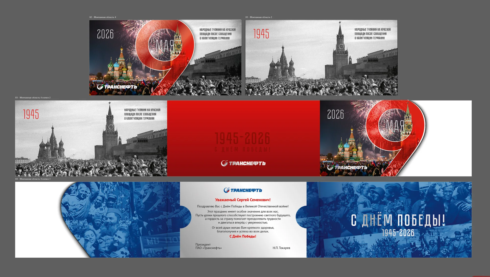
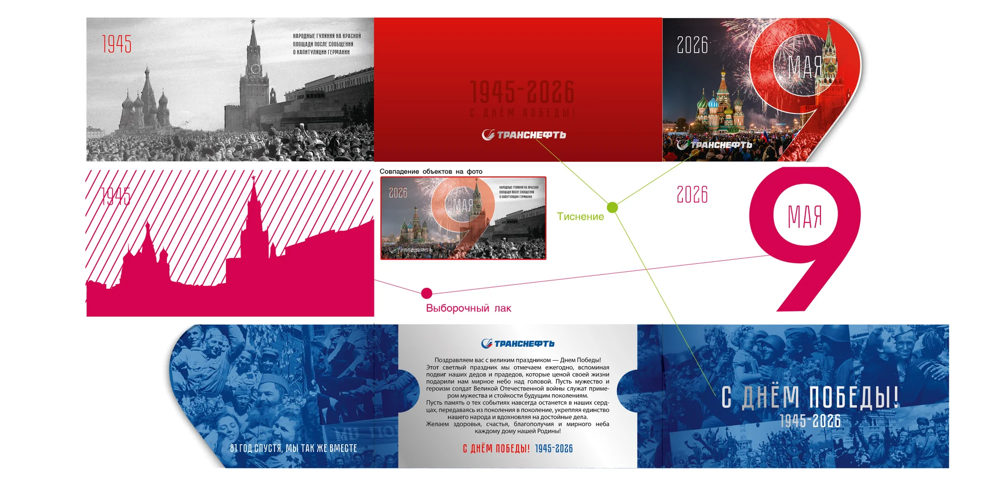
02 / ФОРМА
Девятка как
часть конструкции.
Цифра выходит за прямоугольный формат открытки и становится её фигурным краем. На обороте — спокойная красная плоскость с датами; внутри — поздравление на светлом фоне и синие коллажи исторических фотографий.
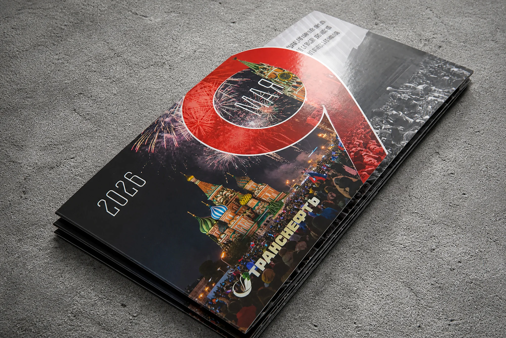
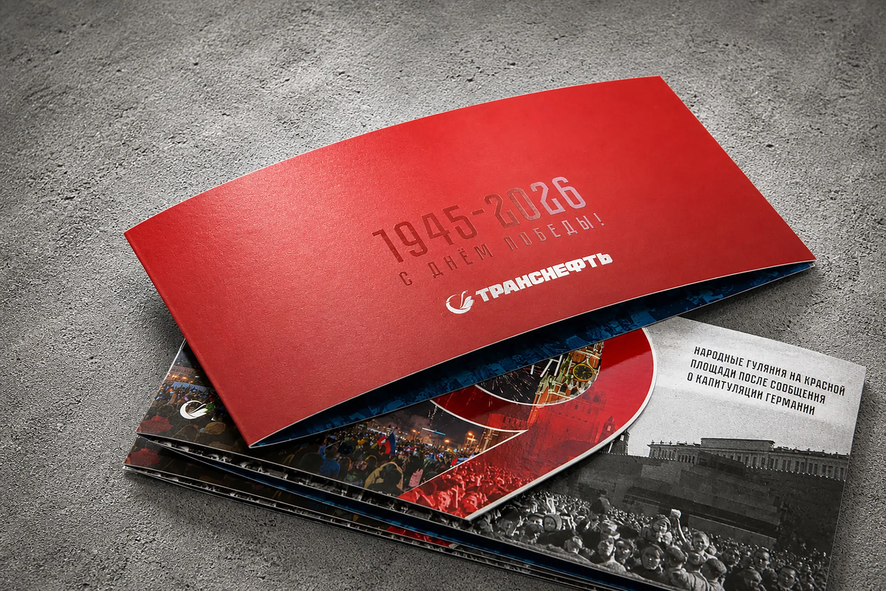
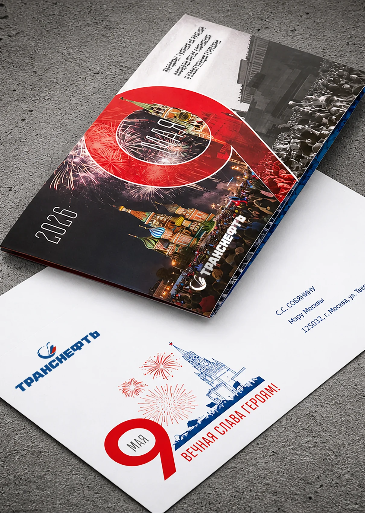
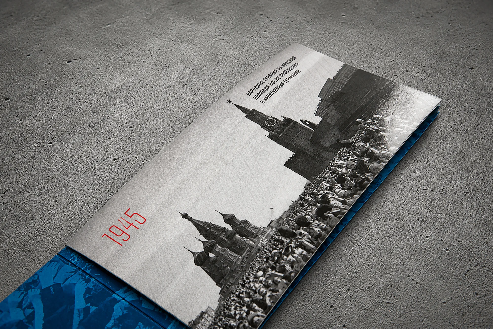
03 / КОМПЛЕКТ
Открытка
и конверт.
Поздравительный разворот продолжает тему памяти в синей цветовой гамме. Конверт с фирменной символикой собирает открытку в единый корпоративный комплект.
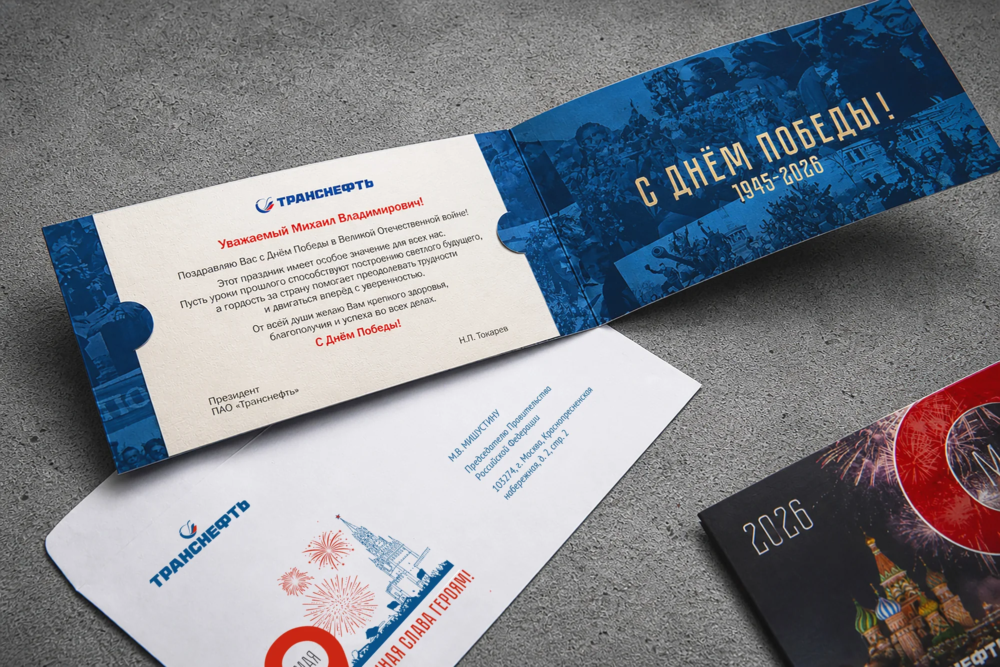
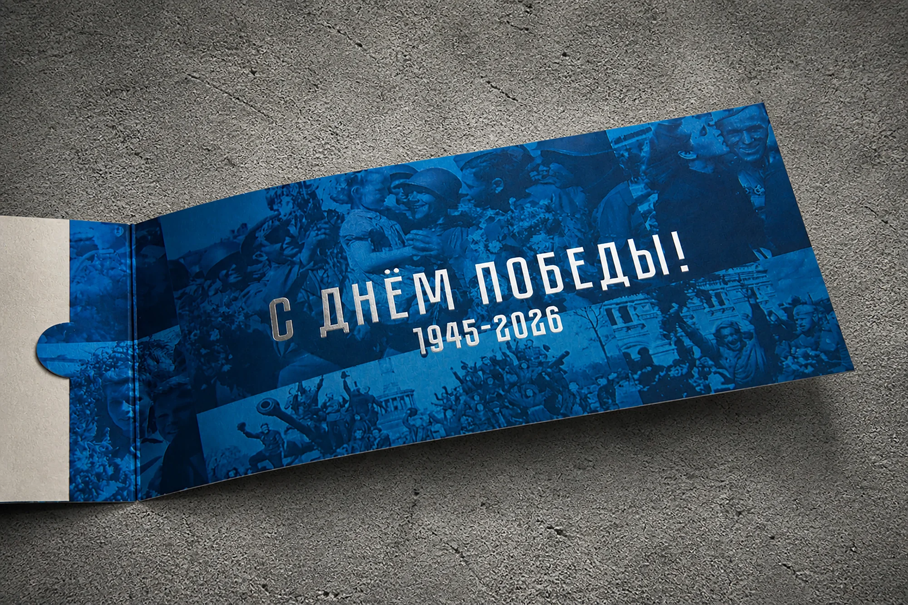
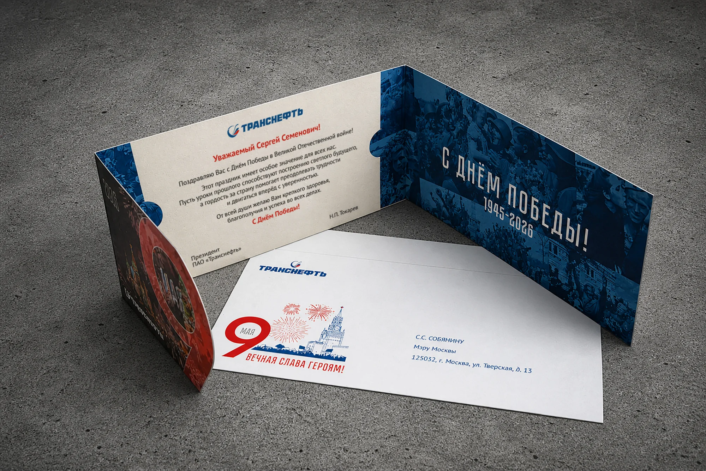
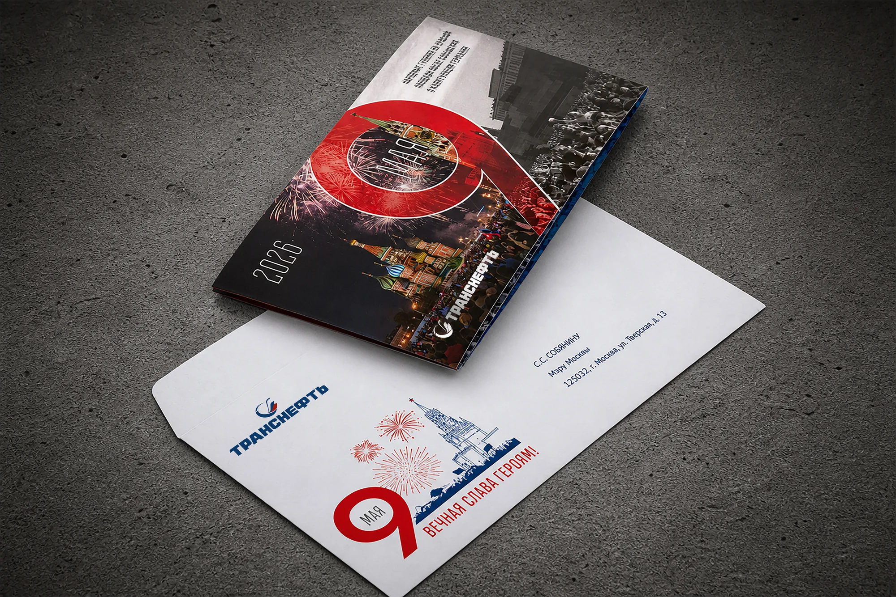
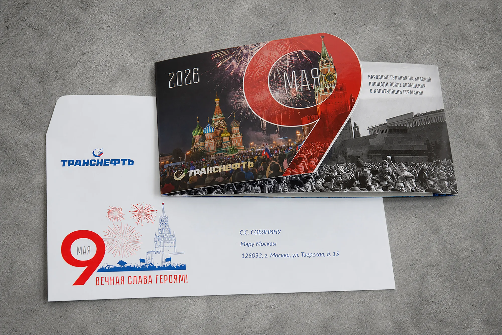
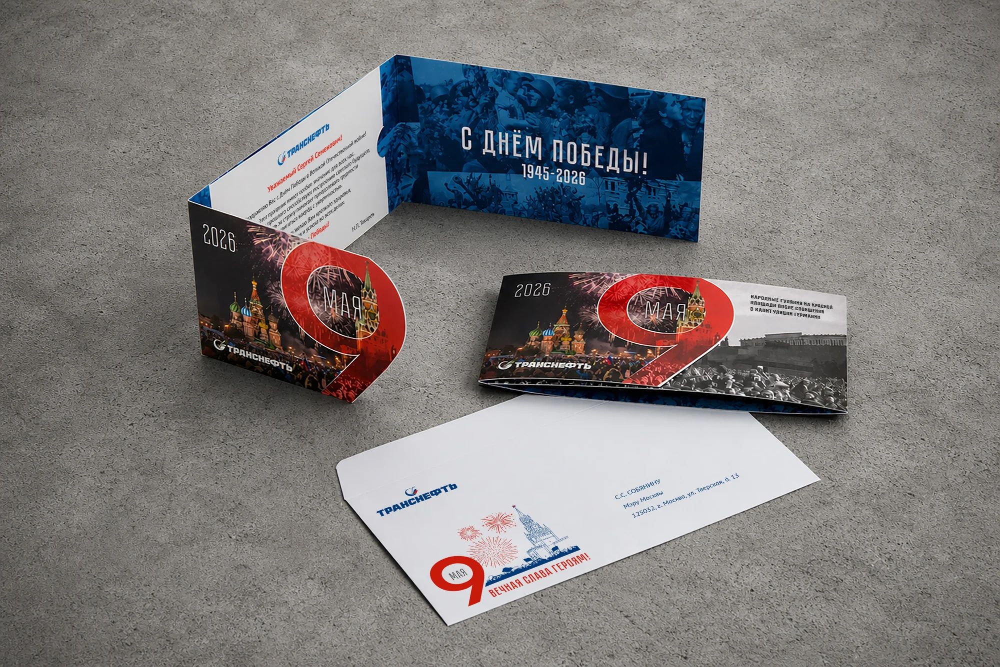
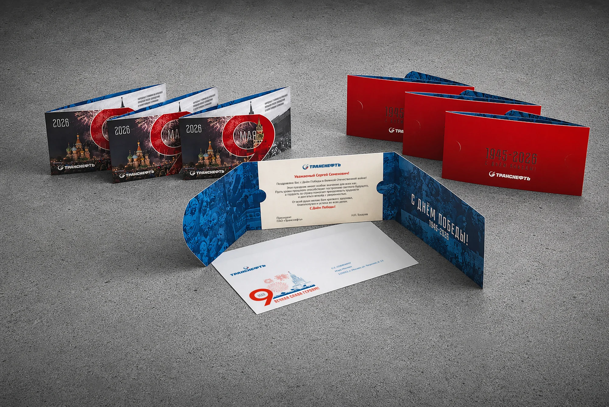